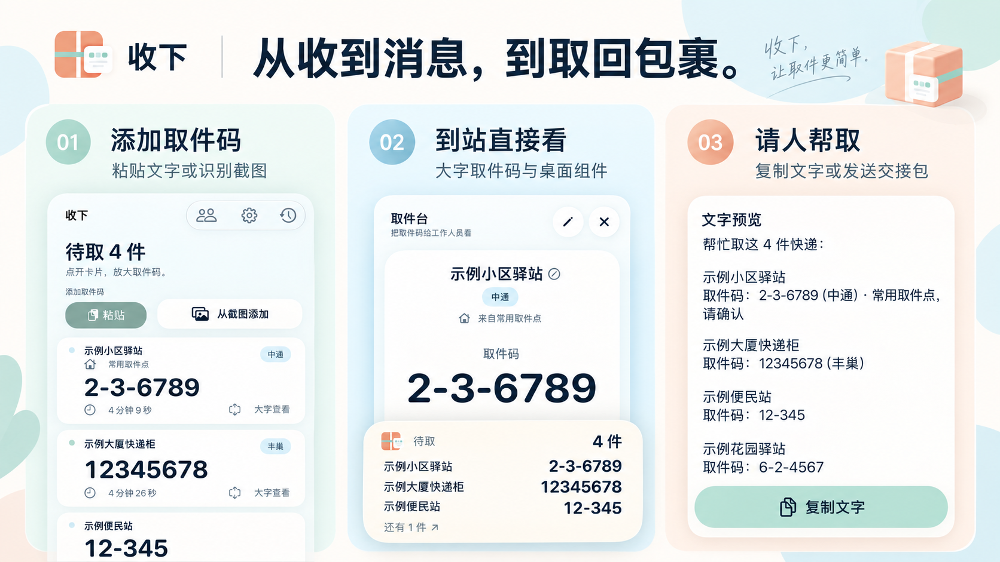
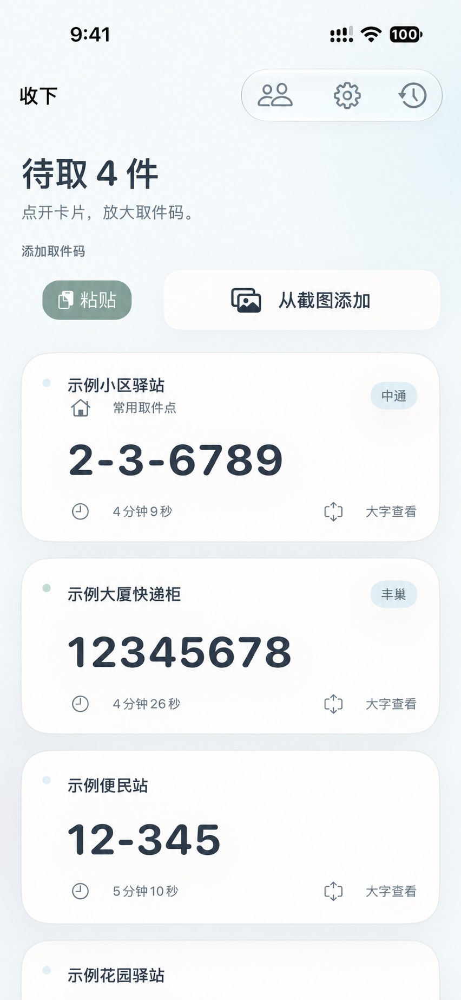
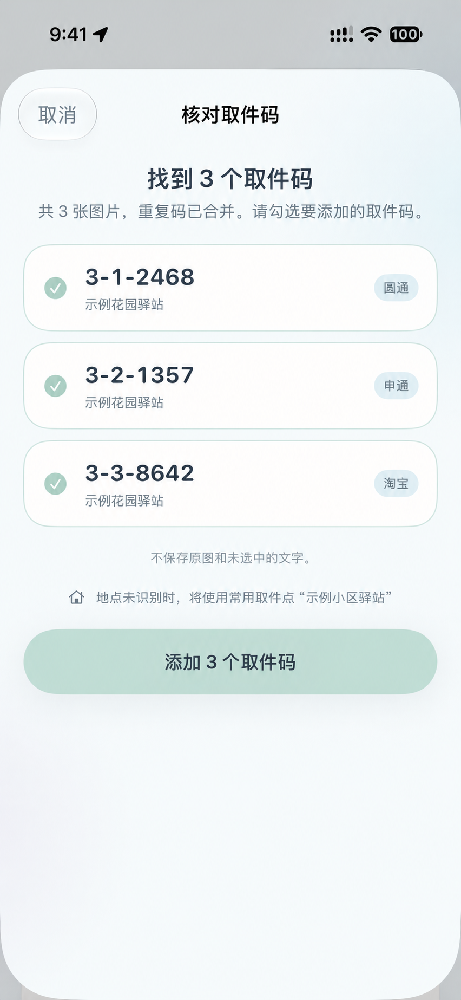
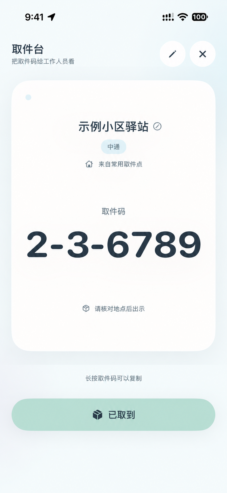
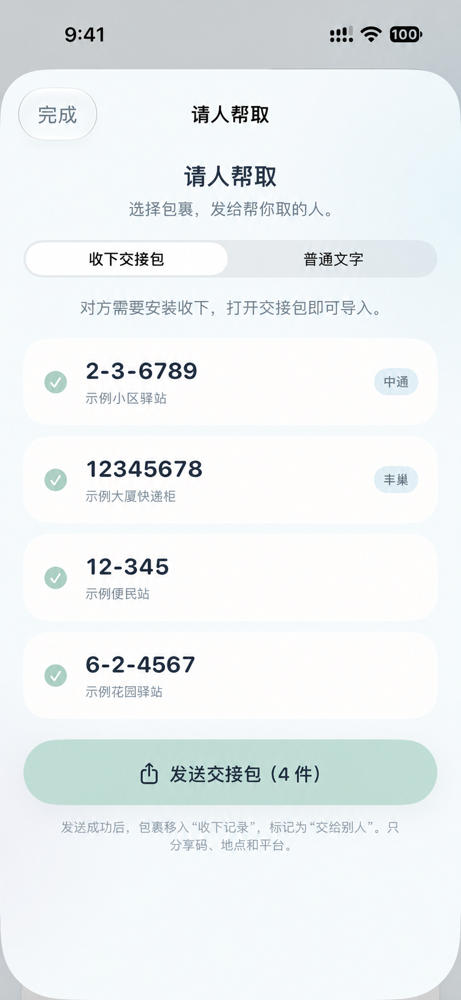
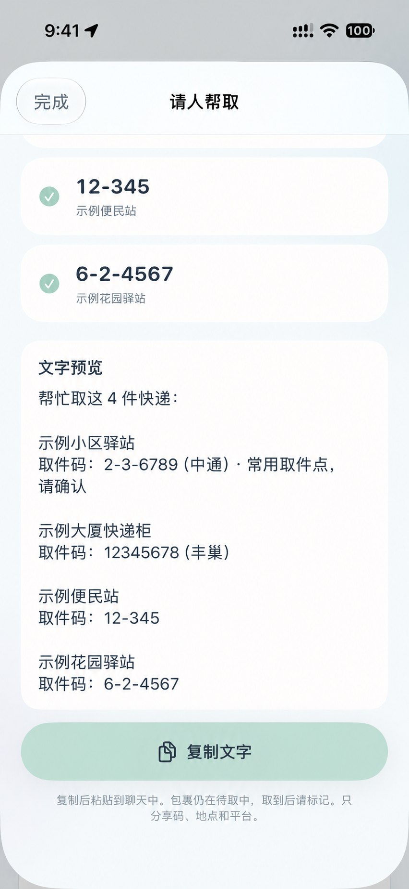
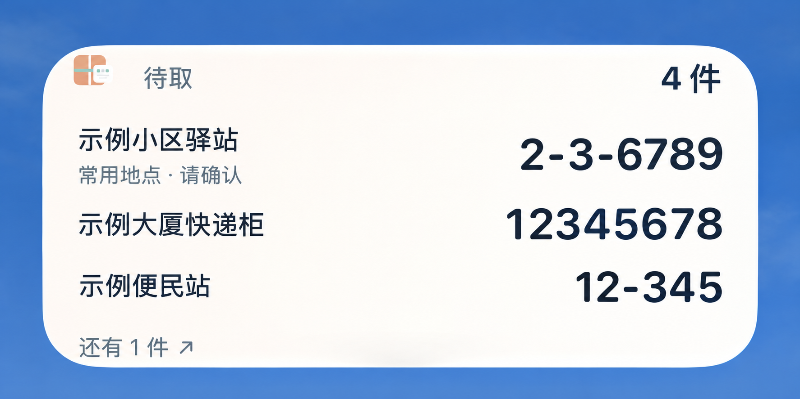
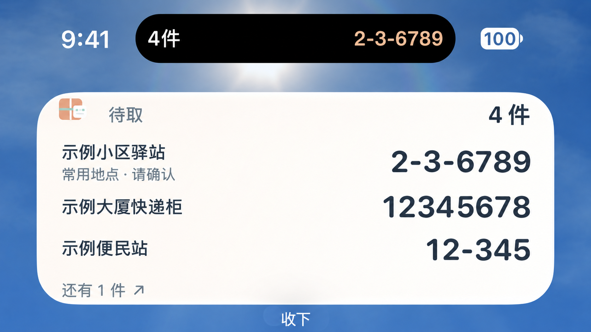

自己的短信，自动进来
在“快捷指令”中设置一次，取件短信自动添加。
iPhone 取件码工具
设置短信自动收码，或粘贴文字、导入截图。 打开 App，取件码和地点一眼就能找到。
中国大陆 App Store · 免费 · iOS 17 及以上
最低支持 iOS 16，具体功能以安装版本为准，下载版本以 App Store 为准。已有且正常运行的快捷指令无需重新设置。
短信、文字、截图，都能添加
在“快捷指令”中设置一次，取件短信自动添加。
粘贴取件文字，或一次选择最多 5 张截图。只在本机识别；1.2.7 结合取件码、地点和快递信息合并重复候选。
点开卡片，放大取件码。同一地点的包裹可以连续查看，也能请人帮取。
小组件与锁屏展示
不用打开列表，也能查看待取信息。
桌面组件显示取件码和地点，锁屏组件显示件数。需自行添加。
在设置中开启后显示，取完收起。到期后打开 App 可恢复。
查看最近 30 天或全部记录。可改回待取，也可永久删除。
从收到消息，到把包裹带回家
整理待取包裹，放大取件码，取到后标记完成。

功能示意图，取件码和地点均为演示数据。下方可查看各个功能。
看看怎么用
以下为脱敏编辑后的界面示意。1.2.5 的文字有所简化，正式版功能仍可正常使用。

打开首页，查看待取包裹和地点。

选好截图，核对取件码后添加。

点开卡片，把取件码给工作人员看。

选择包裹，发送交接包给使用收下的人。

对方不用安装 App，也能照着文字取件。

添加小组件，就能查看待取信息。

在“设置 → 锁屏与灵动岛”中开启。
隐私是默认设置
收下
免费，仅提供 iPhone 版本，当前在中国大陆 App Store 上架。